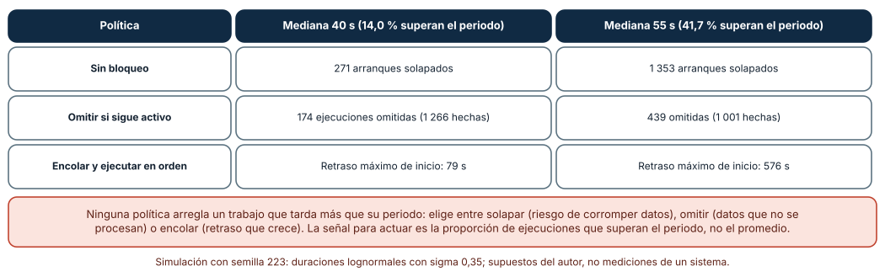
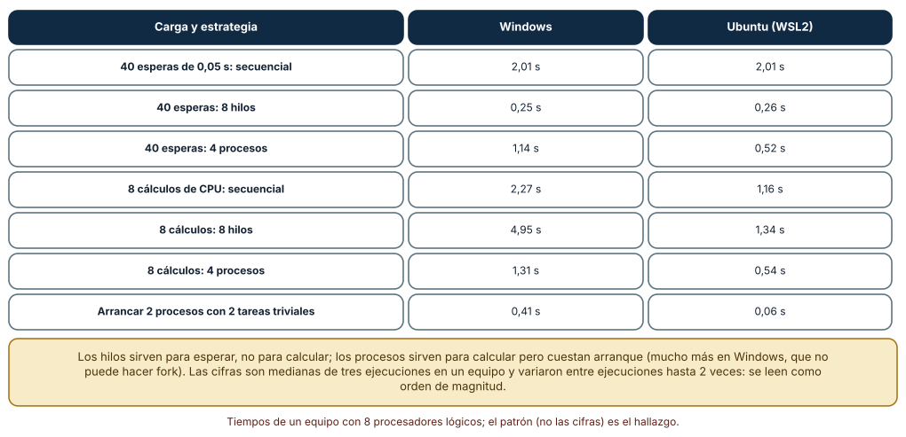
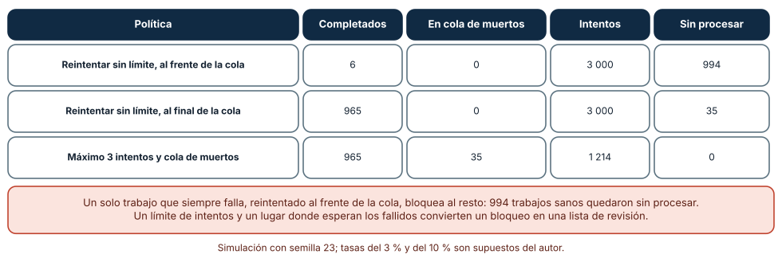

← SE-222 — Daemons, servicios y ciclo de vida · ↑ Parte 18 · 📚 Índice completo · 🌐 Portal · SE-224 — Automatización idempotente y reanudable →
Punto profesional y fundamento pedagógico
Punto profesional. La clase existe para decidir cómo se programa, se reparte y se acota el trabajo que un servicio hace por su cuenta —una ejecución periódica, un grupo de trabajadores, una cola de lotes— de modo que un trabajo lento no se pise a sí mismo, un trabajador adecuado haga cada tarea y un trabajo imposible no bloquee a los demás.
Por qué aparece aquí. Se sitúa después de Daemons, servicios y ciclo de vida (SE-222) y antes de Automatización idempotente y reanudable (SE-224): SE-222 dejó un servicio que arranca y para con orden; esta clase pregunta qué trabajo hace mientras vive y cómo lo reparte, y deja las políticas de solape, de concurrencia y de fallos que SE-224 hará repetibles sin duplicar efectos.
Error conceptual que debe corregir. Creer que «cada minuto» es una garantía de ejecución y que «más hilos» es más velocidad. Un planificador solo promete arrancar; la duración la decide el trabajo; y los hilos aceleran la espera, no el cálculo.
Secuencia de aprendizaje. Antes de leer la solución, predices cuántas ejecuciones se solapan si un trabajo de un minuto tarda a veces más de un minuto, qué estrategia (hilos o procesos) acelera cada carga y qué ocurre con un trabajo que siempre falla colocado al frente de la cola; después lo simulas y lo mides. La secuencia usa predicción, explicación propia, contraste y recuperación. ICAP distingue participación de construcción de conocimiento; How People Learn II exige conectar conocimiento previo, contexto y transferencia; la práctica de recuperación respalda producir de nuevo la explicación tras una demora; y Education for Life and Work exige devolución que explique la causa del error.
Evidencia de aprendizaje. scheduling-log.md con la política de solape, la comparación de hilos y procesos y la política de fallos, con las cifras y las semillas. Debe contener predicción previa, observación, explicación causal, contraejemplo y qué hallazgo haría cambiar la política.
Límite de la conclusión. Las duraciones (lognormales de mediana 40 y 55 s, sigma 0,35) y las tasas de trabajos venenosos (3 %) y transitorios (10 %) son supuestos del autor; los tiempos de hilos y procesos son de un equipo con 8 procesadores lógicos y variaron entre ejecuciones; no se usó cron, un planificador de contenedores ni una cola real.
Trazabilidad fuente → afirmación
| Fuente primaria u oficial | Afirmación que respalda | Lo que no prueba |
|---|---|---|
| POSIX: crontab | Define el formato de las entradas periódicas: la hora de arranque, no la duración ni el solape. | No dice qué hacer si la ejecución anterior no ha terminado. |
| Google SRE: Distributed Periodic Scheduling with Cron | Discute fallos de un cron distribuido: ejecuciones duplicadas, omitidas y el coste de cada decisión. | Describe un sistema de Google, no una herramienta ajena. |
Python: concurrent.futures | Documenta ThreadPoolExecutor y ProcessPoolExecutor y su diferencia. | No mide cuál conviene para una tarea concreta. |
Python: multiprocessing, contextos y métodos de inicio | Explica spawn, fork y forkserver y cuál usa cada sistema. | No dice cuánto cuesta cada uno. |
| Amazon SQS: colas de mensajes fallidos | Describe una cola de mensajes fallidos y un número máximo de recepciones. | Es documentación de un producto, no una norma. |
Antes de empezar
Recupera lo aprendido en SE-222: un servicio necesita estados y un cierre ordenado. La pregunta activa es: ¿qué pasa cuando el trabajo programado dura más de lo previsto, cuando hay que repartirlo y cuando uno de los trabajos no se puede completar?
Prerrequisitos
- Haber completado
SE-222o poder explicar qué es drenar. - Python 3.11 o posterior; un equipo con varios procesadores para la parte de hilos y procesos.
- Trabajar con trabajos sintéticos de
notas: exportaciones y revisiones simuladas.
Problema auténtico
Cada minuto, el planificador de la plataforma lanza notas sincronizar. Un día de mucha carga la sincronización tarda 70 s y la siguiente arranca encima: ambas escriben el mismo archivo y la exportación sale mezclada. El equipo reparte 40 consultas a la base con ocho hilos y todo va bien; reparte 8 cálculos de informe con ocho hilos y va más lento que en secuencia. Y un archivo de entrada corrupto, reintentado indefinidamente al frente de la cola, deja sin procesar a los demás durante horas.
Objetivos observables
Al terminar podrás:
- decidir una política de solape (permitir, omitir o encolar) y medir sus consecuencias con una distribución de duraciones;
- elegir entre hilos y procesos según la carga y declarar el coste de arranque;
- diseñar una cola con límite de reintentos y un lugar para los trabajos fallidos;
- identificar trabajos venenosos y evitar que bloqueen a los demás;
- escribir un contrato del planificador: qué garantiza, qué no y qué mide.
Mapa conceptual
Ver la notación fuente del diagrama
flowchart LR
P[Planificador] -->|cada periodo| J[Trabajo]
J --> Q[Cola]
Q --> W1[Trabajador]
Q --> W2[Trabajador]
W1 -->|ok| D[Hecho]
W1 -->|falla| R{¿Reintentos?}
R -->|quedan| Q
R -->|agotados| M[Cola de muertos]El mapa se lee como un flujo: el planificador arranca trabajos, la cola los reparte a trabajadores y un fallo vuelve a la cola hasta agotar los reintentos. No describe la sincronización interna de los trabajadores.
Temas y por qué importan
| Tema | Por qué cambia una decisión profesional | Evidencia mínima |
|---|---|---|
| Periodicidad y solape | Programar solo promete el arranque; el solape depende de la duración. | Predicción, traza causal y contraejemplo de Solape en scheduling-log.md |
| Concurrencia: hilos y procesos | La carga decide qué acelera; el arranque tiene coste. | Predicción, traza causal y contraejemplo de Concurrencia en scheduling-log.md |
| Colas y trabajadores | Desacoplan quien produce trabajo de quien lo hace. | Predicción, traza causal y contraejemplo de Colas en scheduling-log.md |
| Fallos y trabajos venenosos | Un trabajo imposible no debe bloquear a los posibles. | Predicción, traza causal y contraejemplo de Venenosos en scheduling-log.md |
| Lotes | Agrupar reduce coste por elemento pero aumenta la unidad de pérdida. | Predicción, traza causal y contraejemplo de Lotes en scheduling-log.md |
Conceptos y decisiones
1. Un planificador promete arrancar, no terminar
cron y sus equivalentes ejecutan una orden en un instante o con un periodo. No saben cuánto tarda la orden, ni si la anterior sigue viva. Si la duración es variable, tarde o temprano una ejecución durará más que el periodo. Entonces hay tres políticas: permitir el solape (dos ejecuciones a la vez), omitir (no arrancar si la anterior sigue) y encolar (arrancar cuando termine). Ninguna es gratis: solapar arriesga la corrupción de datos compartidos; omitir deja trabajo sin hacer; encolar acumula retraso. La elección depende de qué se pierde con cada una.
2. La duración es una distribución
Con una duración media de 40 s y un periodo de 60 s «cabe de sobra»; pero si la duración varía, una fracción de ejecuciones superará los 60 s. Lo que importa para decidir no es el promedio sino la proporción que supera el periodo y cuánto la supera. Medir percentiles (p95, p99) y no solo la media es la base de un planificador honesto. Cuando esa proporción crece, hay que cambiar el diseño: dividir el trabajo, ampliar el periodo o poner un límite de tiempo por ejecución.
3. Hilos para esperar, procesos para calcular
En CPython, el bloqueo global del intérprete impide que dos hilos ejecuten código Python a la vez; por eso los hilos aceleran trabajo que espera (red, disco, base de datos) pero no cálculo puro. Los procesos sí lo paralelizan, a cambio de arrancar un intérprete por proceso: con spawn (el único método en Windows y el predeterminado en macOS desde Python 3.8; en Linux el predeterminado es fork en las versiones usadas aquí), cada trabajador importa el módulo principal otra vez, y por eso el código de arranque debe protegerse con if __name__ == "__main__":. El coste de arranque y de serializar los datos decide si un pool de procesos compensa.
4. Colas, reintentos y mensajes venenosos
Una cola desacopla a quien produce trabajo de quien lo ejecuta y permite repartirlo. Un trabajo que falla puede ser transitorio (se arregla reintentando) o venenoso (falla siempre: un archivo corrupto, un caso no previsto). Reintentarlo indefinidamente, y peor, al frente de la cola, consume el presupuesto de intentos sin avanzar. El patrón estándar: un máximo de intentos por trabajo, una espera creciente entre ellos y una cola de mensajes fallidos (o de muertos) donde se aparta el trabajo para su revisión, con una alerta cuando crece.
5. Lotes: la unidad de pérdida
Procesar de uno en uno es lento por la sobrecarga de cada operación; procesar todos en uno es rápido pero cualquier fallo pierde todo. Un lote es un compromiso: más grande reduce el coste por elemento, más pequeño reduce lo que se repite tras un fallo. El tamaño se decide con dos números: el coste fijo por lote y el coste de repetir uno. Y cada lote debe poder reintentarse sin duplicar efectos, lo que prepara SE-224.
Un trabajo cada 60 s que a veces tarda más
Se simuló un día (1 440 ejecuciones) con duraciones lognormales (sigma 0,35, semilla 223). Con una mediana de 40 s, el 14,0 % de las ejecuciones superó los 60 s. Sin bloqueo hubo 271 arranques solapados; omitiendo si seguía activo, 174 ejecuciones omitidas (1 266 hechas); encolando, un retraso máximo de inicio de 79 s. Con una mediana de 55 s, el 41,7 % superó el periodo: 1 353 solapes, 439 omitidas (1 001 hechas) o un retraso máximo de 576 s que sigue creciendo.
def planificar(duraciones, politica, periodo=60.0):
fin = 0.0
for k, d in enumerate(duraciones):
t = k * periodo
if politica == "omitir" and t < fin:
continue # la anterior sigue: no se arranca
inicio = max(t, fin) if politica == "encolar" else t
fin = inicio + d
Cómo leer la figura. Cada fila es una política y cada columna una duración mediana; los números cuentan solapes, ejecuciones omitidas o el mayor retraso. Dónde deja de valer: la distribución lognormal y sus parámetros son supuestos; una duración real puede tener colas más pesadas. El resultado no dice qué política elegir, dice qué pierde cada una y que ninguna sustituye a hacer más corto el trabajo.
Hilos y procesos: esperar o calcular
Se midieron tres estrategias con la mediana de tres ejecuciones. 40 esperas de 0,05 s: secuencial 2,01 s; ocho hilos 0,25 s; cuatro procesos 1,14 s en Windows (0,52 s en Ubuntu). 8 cálculos de CPU (1,5 millones de iteraciones cada uno): secuencial 2,27 s en Windows (1,16 s en Ubuntu); ocho hilos 4,95 s (1,34 s), es decir, más lentos que en secuencia; cuatro procesos 1,31 s (0,54 s). Arrancar un pool de dos procesos con dos tareas triviales costó 0,41 s en Windows y 0,06 s en Ubuntu. Entre ejecuciones, las cifras de procesos y de cálculo variaron hasta el doble en el equipo de pruebas.

Cómo leer la figura. Cada fila es una carga y una estrategia; las dos columnas son sistemas. Dónde deja de valer: son medianas de tres ejecuciones en un equipo con carga variable; los tiempos absolutos no se trasladan, pero el patrón sí: los hilos ayudan a esperar y perjudican a calcular, y los procesos ayudan a calcular a cambio de un arranque que en Windows cuesta mucho más que en Linux.
Un trabajo imposible al frente de la cola
Mil trabajos, 35 venenosos (que siempre fallan) y 110 con un fallo transitorio (fallan solo la primera vez), con un presupuesto de 3 000 intentos. Reintentar sin límite, volviendo al frente de la cola: completó 6 trabajos y dejó 994 sin procesar. Reintentar sin límite, volviendo al final: completó 965 y dejó 35 venenosos circulando sin parar. Máximo de 3 intentos y cola de muertos: completó 965, apartó 35 y usó 1 214 intentos.

Cómo leer la figura. Cada fila es una política; las columnas finales muestran el efecto: cuántos terminaron, cuántos se apartaron y cuántos quedaron sin tocar. Dónde deja de valer: los porcentajes (3 % y 10 %) son supuestos y el presupuesto de intentos es artificial; en una cola real el efecto depende del tamaño de la cola y de la concurrencia. Lo que generaliza es el orden: sin límite de intentos y sin un lugar donde apartar, un solo trabajo puede monopolizar el sistema.
Definiciones de trabajo
- planificador: componente que arranca trabajos en instantes o periodos dados, sin garantizar cuándo terminan.
- política de solape: decisión sobre qué hacer cuando una ejecución arranca mientras la anterior sigue activa.
- trabajador (worker): proceso o hilo que toma trabajos de una cola y los ejecuta.
- trabajo venenoso: trabajo que falla en cada intento por una causa que reintentar no resuelve.
- cola de muertos: lugar donde se aparta un trabajo que agotó sus reintentos para su revisión.
Las definiciones son operativas para la herramienta notas. No convierten términos con historia más amplia en sinónimos y deben contrastarse con la documentación primaria enlazada al final.
Ejemplo mínimo
El fragmento compara hilos y secuencia para tareas de espera. Antes de ejecutarlo, predice la razón entre ambos tiempos.
import time
from concurrent.futures import ThreadPoolExecutor
def esperar(_):
time.sleep(0.05)
t = time.perf_counter(); list(map(esperar, range(40))); seq = time.perf_counter() - t
t = time.perf_counter()
with ThreadPoolExecutor(8) as ex: list(ex.map(esperar, range(40)))
print("secuencial %.2f s, ocho hilos %.2f s" % (seq, time.perf_counter() - t))Debería mostrar una razón cercana a ocho. Cambia esperar por un cálculo y observa la inversión; registra versión y sistema.
Ejemplo profesional
notas servir programa tres trabajos: la sincronización cada 60 s con política de omitir si sigue activa y un límite de 50 s por ejecución, la exportación nocturna con un candado de archivo para que solo una instancia la ejecute, y un lote de revisiones con tamaño 200. Las consultas a la base se reparten con ocho hilos y los informes con cuatro procesos, que arrancan una vez y se reutilizan. La cola permite tres intentos con espera de 1, 4 y 16 s; tras ellos el trabajo pasa a una carpeta muertos/ con el motivo y se avisa si hay más de cinco. Cada ejecución registra inicio, duración, resultado y si fue omitida. Una prueba simula una ejecución de 70 s y exige que la siguiente se omita, que quede registrada y que no haya dos escritores.
Compara el caso normal con una ejecución lenta, una entrada corrupta y un pico de trabajo. La configuración es apropiada cuando los tres casos tienen una respuesta distinta y medida; es peligrosa cuando todos terminan en «reintentar».
Práctica guiada
- Escribe en prosa qué promete el planificador de
notasy qué no. - Simula 1 440 ejecuciones con dos medianas y mide solapes, omisiones y retraso con tres políticas.
- Mide una carga de espera y una de cálculo con secuencia, hilos y procesos.
- Protege el código de arranque con
if __name__ == "__main__":y comprueba qué ocurre sin él en Windows. - Simula 1 000 trabajos con 3 % de venenosos y tres políticas de reintento.
- Define el tamaño de un lote con el coste fijo y el de repetir uno.
- Pide a otra persona que reproduzca las tres tablas solo desde
scheduling-log.md.
Ejercicios
- Límite de tiempo: añade un límite de 50 s por ejecución a la política de omitir y recalcula el efecto en la proporción de ejecuciones que no terminan.
- Percentil: con las duraciones simuladas, calcula p50, p95 y p99 y decide a partir de cuál el periodo de 60 s deja de ser razonable.
- Pool: decide, con las cifras de la clase, cuántas tareas de 0,05 s hacen falta para que un pool de procesos compense su arranque en Windows.
- Cola de muertos: diseña qué información guarda un trabajo apartado y quién la revisa; mide cuánto crece la cola con 3 % de venenosos y 1 000 trabajos por hora.
Reto verificable
Entrega scheduling-log.md con la política de solape, la tabla de hilos y procesos y la simulación de la cola, con semillas (223 y 23). Se aprueba si otra persona ejecuta el código desde un checkout limpio, obtiene las mismas cifras de las simulaciones (271, 174, 79 s, 1 353, 439 y 576 s; 6, 965 y 1 214 intentos) y el mismo patrón en los tiempos, y puede señalar qué política cambiaría. No se aprueba por usar una biblioteca de colas ni por un número de trabajadores sin medición.
Caso conductor
La herramienta notas es el caso conductor de la Parte 18. Esta clase deja sus políticas: omitir si sigue activa, hilos para consultas, procesos para informes y reintentos limitados con cola de muertos. SE-224 hace que cada operación pueda repetirse sin duplicar efectos. Cambia después un solo detalle, el periodo de 60 a 90 s, y mide cuántos solapes y omisiones desaparecen.
Preguntas frecuentes
¿Siempre hay que omitir si la ejecución anterior sigue?
No: omitir es la opción segura para tareas idempotentes y periódicas donde la siguiente recuperará lo perdido. Para un trabajo que no debe perder ninguna ejecución, encolar con alerta de retraso es mejor.
¿Más trabajadores arreglan una cola que crece?
Solo si el cuello de botella es la espera y los trabajadores no compiten por el mismo recurso. Si el límite es la CPU o una base de datos, más trabajadores empeoran la contención.
¿Por qué el pool de procesos tarda tanto en Windows?
Porque Windows no tiene fork: cada proceso hijo arranca un intérprete nuevo e importa los módulos. En Linux se copia el proceso padre. El coste fijo se amortiza con tareas largas.
¿Cuántos reintentos son razonables?
Los suficientes para cubrir los fallos transitorios de la dependencia (dos o tres, con espera creciente) y ninguno más: tras ellos, el motivo ya no es azar.
Fallo controlado y diagnóstico
Reproduce el fallo clásico de la clase: un trabajo venenoso que bloquea la cola. Usa la política que reintenta al frente sin límite.
Registra síntoma, entrada mínima, hipótesis, observación que descarta cada hipótesis, causa, corrección y prueba de regresión. Síntoma: tras la llegada de un archivo corrupto, la cola deja de avanzar y el contador de procesados se queda en 6. Hipótesis rivales: (a) los trabajadores están caídos; (b) la base de datos está lenta; (c) un trabajo se reintenta siempre al frente. Prueba: los trabajadores responden y las consultas son rápidas; el registro muestra el mismo identificador una y otra vez. Conclusión: la causa es la tercera. Regresión: limitar a tres intentos con espera creciente, mover el trabajo a la cola de muertos con su motivo y añadir una prueba que inserte un trabajo venenoso y exija que el resto avance. No cambies a la vez el límite y la concurrencia.
Errores comunes y cómo corregirlos
| Síntoma | Causa probable | Corrección |
|---|---|---|
| Dos ejecuciones escriben el mismo archivo | El planificador arranca sin comprobar la anterior | Política de solape con candado y límite de tiempo |
| Los hilos no aceleran un cálculo | El bloqueo global del intérprete serializa el código | Procesos para cálculo; hilos para espera |
| El pool de procesos falla al importar en Windows | Falta la protección __main__ | Proteger el arranque; evitar efectos al importar |
| La cola deja de avanzar | Un trabajo venenoso se reintenta sin límite | Máximo de intentos y cola de muertos |
| El retraso de las ejecuciones crece cada día | La duración supera el periodo y se encola | Medir percentiles, acortar el trabajo o ampliar el periodo |
Entorno y archivos clave
work/SE-223/
├── README.md
├── planificador.py
├── experimentos/
│ ├── solapes.py
│ ├── pools.py
│ └── cola.py
└── evidence/scheduling-log.mdEl README declara plataforma, versión de Python, semillas (223 y 23) y comandos. Los experimentos usan solo la biblioteca estándar (concurrent.futures, random, time) y se ejecutaron con CPython 3.12.9 en Windows 11 y 3.12.3 en Ubuntu bajo WSL2: las simulaciones fueron idénticas; los tiempos de hilos y procesos variaron y se informan como medianas de un equipo.
Seguridad, ética y accesibilidad
- una ejecución solapada que escribe datos personales o notas puede corromperlos: protege los recursos compartidos con un candado o un archivo temporal;
- los trabajos apartados pueden contener datos de personas: la cola de muertos requiere los mismos controles de acceso que el original;
- un reintento automático sobre un servicio ajeno debe tener límite y espera para no agravar una caída;
- las alertas de retraso deben ser comprensibles y no depender solo del color;
- respeta las licencias de las bibliotecas de colas y de planificación y atribuye las adaptaciones.
Puente hacia el trabajo con agentes
Un agente al que se le pide «haz que se ejecute en paralelo» suele cambiar for por ThreadPoolExecutor sin distinguir espera de cálculo, sin proteger el arranque para Windows y sin pensar en el solape ni en los trabajos que fallan. Pídele que mida antes y después con la misma carga, que justifique hilos o procesos, que defina la política de solape y que pruebe un trabajo venenoso. Revisa especialmente si el reintento tiene límite y si los datos compartidos están protegidos.
Transferencia
Traslada el experimento a otro trabajo periódico (por ejemplo, una limpieza nocturna de archivos temporales): mide la distribución de su duración, decide la política de solape y diseña su cola de fallos. La transferencia está lograda cuando puedes explicar qué parte de la decisión dependía de la distribución de duraciones y cuál del tipo de carga, no cuando las tablas se parecen.
Evaluación y evidencia
| Criterio | Evidencia para aprobar |
|---|---|
| comprensión | explicación de qué promete y qué no promete un planificador |
| corrección | simulaciones reproducibles con semillas y mediciones con su variabilidad |
| diseño | política de solape, de concurrencia y de fallos justificadas |
| diagnóstico | reproducción del fallo «trabajo venenoso» con regresión |
| incertidumbre | declaración de qué supuestos tiene cada simulación |
| reproducibilidad | versiones, semillas, comandos y límites declarados |
Fuentes
- POSIX: crontab — formato de las entradas periódicas; autoridad: The Open Group.
- Google SRE: Distributed Periodic Scheduling with Cron — fallos de la planificación periódica; autoridad: Google.
- Python:
concurrent.futures— pools de hilos y procesos; autoridad: documentación de Python. - Python:
multiprocessing— métodos de inicio de procesos; autoridad: documentación de Python. - Amazon SQS: colas de mensajes fallidos — patrón de cola de muertos; autoridad: documentación de AWS.
Cada fuente respalda el mecanismo indicado; ninguna demuestra que la política de notas sea la adecuada para un trabajo concreto. Esa afirmación depende de lo que pierde cada decisión.
- Python:
random— semillas de las simulaciones. - Python:
time.perf_counter— reloj usado en las mediciones.
Límites y siguiente paso
Se ejecutaron tres experimentos en Windows y Ubuntu (WSL2): las simulaciones fueron idénticas y los tiempos variaron entre ejecuciones. No se usó cron, ningún orquestador ni una cola real; las duraciones, las tasas de fallo y el presupuesto de intentos son supuestos del autor. La siguiente clase pregunta cómo hacer que cada operación pueda repetirse y reanudarse sin duplicar efectos.
Glosario
- planificador: componente que arranca trabajos en instantes o periodos dados, sin garantizar cuándo terminan.
- política de solape: decisión sobre qué hacer cuando una ejecución arranca mientras la anterior sigue activa.
- trabajador (worker): proceso o hilo que toma trabajos de una cola y los ejecuta.
- trabajo venenoso: trabajo que falla en cada intento por una causa que reintentar no resuelve.
- cola de muertos: lugar donde se aparta un trabajo que agotó sus reintentos para su revisión.
← SE-222 — Daemons, servicios y ciclo de vida · ↑ Parte 18 · 📚 Índice completo · 🌐 Portal · SE-224 — Automatización idempotente y reanudable →